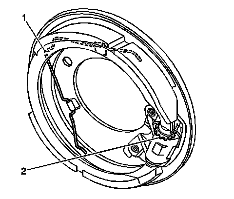
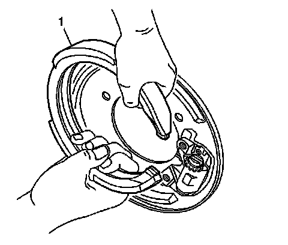

Parking Brake Shoe: Service and Repair
Parking Brake Shoe Replacement
Removal Procedure
1. Remove the wheel bearing and hub assembly. Refer to Rear Wheel Bearing and Hub Replacement (Rear Suspension) .

2. Rotate the parking brake adjusting nut (2) until all park brake shoe adjustment has been removed.
3. Remove the parking brake shoe retaining spring (1).

4. Remove the park brake shoe assembly (1) by grasping the shoe and spreading slightly while pulling the shoe from the actuator assembly.
Installation Procedure
1. Install the park brake shoe assembly (1) by grasping the shoe and spreading slightly while pulling the shoe over the actuator assembly.
2. Install the parking brake shoe retaining spring (1).
3. Install the wheel bearing and hub assembly. Refer to Rear Wheel Bearing and Hub Replacement (Rear Suspension) .
4. Adjust the parking brake shoe-to-drum clearance. Refer to Park Brake Adjustment (Adjustments) .
5. Lower the vehicle.